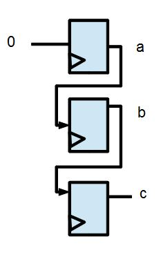

流程式設計
所謂 RTL 是 Register Transfer Language 的縮寫，也就是暫存器轉換語言，這種寫法與 C, Java 等高階語言非常相似， 因此讓「程式人」也有機會透過 Verilog 設計自己的硬體。
舉例而言，在數位邏輯當中，多工器是一個很有用的電路，假如我們想設計一個二選一的多工器，那麼我們可以很直覺得 用以下的 RTL 寫法，去完成這樣的電路設計。
module mux(f, a, b, sel);
output f;
input a, b, sel;
reg f; // reg 型態會記住某些值，直到被某個 assign 指定改變為止
always @(a or b or sel) // 當任何變數改變的時候，會執行內部區塊
if (sel) f = a; // Always 內部的區塊採用 imperative 程式語言的寫法。
else f = b;
endmodule對於上述程式，您還可以進一步的將參數部分化簡，將型態寫入到參數中，成為以下的形式：
module mux(output reg f, input a, b, sel);
always @(a or b or sel) // 當任何變數改變的時候，會執行內部區塊
if (sel) f = a; // Always 內部的區塊採用 imperative 程式語言的寫法。
else f = b;
endmodule在 verilog 當中，if, case 等陳述一定要放在 always 或 initial 的理面，always @(cond) 代表在 cond 的 條件之下要執行該區塊，例如上述的 always @(a or b or sel) 則是在 a, b, 或 sel 有改變的時後，就必須 執行裏面的動作。
有時我們只希望在波型的「正邊緣」或「負邊緣」時，才執行某些動作，這時候就可以用 posedge 或 negedge 這 兩個修飾詞，例如以下的程式：
always @(posedge clock) begin // 當 clock 時脈在正邊緣時才執行
f = a;
end而 initial 則通常是在測試程式 test bench 當中使用的，在一開始初始化的時後，可以透過 initial 設定初值， 例如以下的程式：
initial begin
clock = 0
endVerilog 程式的許多地方，都可以用 #delay 指定時間延遲，例如 #50 就是延遲 50 單位的時間 (通常一單位時間 是一奈秒 ns)。舉例而言，假如我們想要每個 50 奈秒讓 clock 變化一次，那麼我們就可以用下列寫法達到目的：
always #50 begin
clock = ~clock; // 將 clock 反相 (0 變 1 、1 變 0)
end以上的延遲也可以寫在裡面，而不是直接寫在 always 後面，例如改用以下寫法，也能得到相同的結果。
always begin
#50;
clock = ~clock; // 將 clock 反相 (0 變 1 、1 變 0)
end範例 3：計數器的 RTL 設計
接著、讓我們用一個整合的計數器範例，來示範這些語法的實際用途，以下是我們的程式內容。
檔案：counter.v
// 定義計數器模組 counter，包含重置 reset, 時脈 clock 與暫存器 count
module counter(input reset, clock, output reg [7:0] count);
always @(reset) // 當 reset 有任何改變時
if (reset) count = 0; // 如果 reset 是 1 ，就將 count 重置為 0
always @(posedge clock) begin // 在 clock 時脈的正邊緣時
count = count + 1; // 將 count 加 1
end
endmodule
module main; // 測試主程式開始
wire [7:0] i; // i:計數器的輸出值
reg reset, clock; // reset:重置訊號, clock:時脈
// 宣告一個 counter 模組 c0、計數器的值透過線路 i 輸出，以便觀察。
counter c0(reset, clock, i);
initial begin
$display("%4dns: reset=%d clock=%d i=%d", $stime, reset, clock, i); // 印出 0ns: reset=x clock=x i= x
#10 reset = 1; clock=0; // 10ns 之後，將啟動重置訊號，並將 clock 初值設為 0
$display("%4dns: reset=%d clock=%d i=%d", $stime, reset, clock, i); // 印出 10ns: reset=1 clock=0 i= x
#10 reset = 0; // 又經過 10ns 之後，重置完畢，將 reset 歸零
$display("%4dns: reset=%d clock=%d i=%d", $stime, reset, clock, i); // 印出 20ns: reset=0 clock=0 i= 0
#500 $finish; // 再經過 500ns 之後，結束程式
end
always #40 begin // 延遲 40ns 之後，開始作下列動作
clock=~clock; // 將時脈反轉 (0 變 1 、1 變 0)
#10; // 再延遲 10ns 之後
$display("%4dns: reset=%d clock=%d i=%d", $stime, reset, clock, i); // 印出 reset, clock 與 i 等變數值
end
endmodule在上述程式中，$display() 函數可以用來顯示變數的內容，其作用就像 C 語言的 printf() 一樣。不過、 由於 Verilog 設計的是硬體，因此像 $display() 這樣前面有錢字 $ 符號的指令，其實是不會被合成為電路的， 只是方便除錯時使用而已。
以下是我們用 icarus 軟體編譯並執行上述程式的過程與輸出結果：
D:\Dropbox\Public\pmag\201307\code>iverilog -o counter counter.v
D:\Dropbox\Public\pmag\201307\code>vvp counter
0ns: reset=x clock=x i= x
10ns: reset=1 clock=0 i= x
20ns: reset=0 clock=0 i= 0
50ns: reset=0 clock=1 i= 1
100ns: reset=0 clock=0 i= 1
150ns: reset=0 clock=1 i= 2
200ns: reset=0 clock=0 i= 2
250ns: reset=0 clock=1 i= 3
300ns: reset=0 clock=0 i= 3
350ns: reset=0 clock=1 i= 4
400ns: reset=0 clock=0 i= 4
450ns: reset=0 clock=1 i= 5
500ns: reset=0 clock=0 i= 5您可以看到，在一開始的時候以下的 initial 區塊會被執行，但由於此時 reset, clock, i 都尚未被賦值， 所以第一個 $display() 印出了代表未定值的 x 符號。
initial begin
$display("%4dns: reset=%d clock=%d i=%d", $stime, reset, clock, i); // 印出 0ns: reset=x clock=x i= x
#10 reset = 1; clock=0; // 10ns 之後，將啟動重置訊號，並將 clock 初值設為 0
$display("%4dns: reset=%d clock=%d i=%d", $stime, reset, clock, i); // 印出 10ns: reset=1 clock=0 i= x
#10 reset = 0; // 又經過 10ns 之後，重置完畢，將 reset 歸零
$display("%4dns: reset=%d clock=%d i=%d", $stime, reset, clock, i); // 印出 20ns: reset=0 clock=0 i= 0
#500 $finish; // 再經過 500ns 之後，結束程式
end接著 #10 reset = 1; clock=0 指令在延遲 10ns 後，執行 reset=1; clock=0，於是後來的 $display() 就印出了 10ns: reset=1 clock=0 i= x 的結果。
但是就在 reset 被設為 1 的時候，由於 reset 的值有所改變，因此下列模組中的 always @(reset) 被觸發了， 於是開始執行 if (reset) count = 0 這個陳述，將 count 暫存器設定為 0。
module counter(input reset, clock, output reg [7:0] count);
always @(reset) // 當 reset 有任何改變時
if (reset) count = 0; // 如果 reset 是 1 ，就將 count 重置為 0
always @(posedge clock) begin // 在 clock 時脈的正邊緣時
count = count + 1; // 將 count 加 1
end
endmodule然後 #10 reset = 0 指令又在延遲 10ns 後執行了 reset = 0，之後再用 $display() 時，由於 count 已經 被設定為 0，所以此時印出的結果為 20ns: reset=0 clock=0 i= 0。
initial 區塊的最後一個陳述，#500 $finish，會在 520ns 的時候才執行，執行時 $finish 會將整個測試程式 結束。
但在程式結束之前，以下的程式會在延遲 40ns 之後，開始將 clock 反相，然後再等待 10ns 之後用 $display() 印出變數內容，因此整個區塊每 50ns (=40ns+10ns) 會被執行一次。
always #40 begin // 延遲 40ns 之後，開始作下列動作
clock=~clock; // 將時脈反轉 (0 變 1 、1 變 0)
#10; // 再延遲 10ns 之後
$display("%4dns: reset=%d clock=%d i=%d", $stime, reset, clock, i); // 印出 reset, clock 與 i 等變數值
end所以、您才會看到像下面的輸出結果，如果仔細觀察，會發現 clock 每 50ns 變換一次，符合上述的程式邏輯，而且每當 clock 從 0 變成 1 的正邊緣，就會觸發 counter 模組，讓 count 變數加 1 ，並且透過線路 i 的輸出被我們觀察到。
50ns: reset=0 clock=1 i= 1
100ns: reset=0 clock=0 i= 1
150ns: reset=0 clock=1 i= 2
200ns: reset=0 clock=0 i= 2
250ns: reset=0 clock=1 i= 3
300ns: reset=0 clock=0 i= 3(註：或許您有注意到上期當中我們用 $monitor() 來觀察全加器的輸出，$display() 與 $monitor() 的語法 幾乎一模一樣，但是 $display() 是顯示該時間點的變數內容，而 $monitor() 則會在受觀察的變數有改變時就 列印變數內容，兩者的的功能有明顯的差異)。
阻塞 vs. 非阻塞 (Blocking vs. Nonblocking)
您可能會注意到在 Verilog 當中有兩種指定方式，一種用 = 表示，另一種用 <= 表示，這兩種指定方法看來很類似，但意義上卻有很細緻的差異，一般 Verilog 初學者往往分不清楚，因而造成很多程式上的錯誤。
基本上 = 指令是阻塞式的 (Blocking)，因此程式會按照「循序」的方式，一個指令接著一個指令執行，就像 C 語言裏的 a=b, b=c 這樣，b=c 會在 a=b 執行完之後才執行，以下是一個範例。
但是 <= 指令卻是非阻塞式的 (Nonblocking)，所以程式會採用「平行」的方式執行。舉例而言，像是 a<=b, b<=c 會同時執行兩者，所以 a 會取得上一輪的 b 值，而 b 則會取得上一輪的 c 值。
Blocking 的語法 (=) 通常用在「組合電路」上，也就是 always @(*) 語句裏面，而 Nonblocking 的語法 (<=) 通常用在採用邊緣觸發的「循序電路」上，也就是 always @(posedge clock) 的語句裏面。
且讓我們用幾個範例來說明 blocking = 與 Nonblocking <= 的差別。
範例 1：
阻塞式 (Blocking =)
|
非阻塞式 (Nonblocking <=)
|
|---|---|
結果： a=b=c=0; 合成電路： 
|
結果：a=0; b=上一輪的 a 值； c=上一輪的 b 值。 合成電路：  |
| 注意：通常 blocking assignment = 會用在 always @(*) 語句裏面。 |
注意：通常 nonblocking assignment <= 會用在 always @(posedge clock or reset) 語句裏面。 |
結語
有些人說在設計 Verilog 程式的時候，必須先心中有電路，才能夠設計的出來。
但是、從我這樣一個「程式人」的角度看來，並非如此，採用流程式的寫法也可以設計得出 Verilog 程式，不需一定要有電路圖。
當然、採用「流程式」寫法的話，如果是用 blocking 的 = 方式，那麼可能會造成很長的鏈狀結構，這或許會讓電路效能變差。
但是由於「流程式」寫法簡單又清楚，因此程式碼往往比「區塊式寫法」短，而且更容易懂，這是流程式寫法的好處。
當然、如果兩種寫法都會，那是最好的了，我們將在後續的章節當中陸續用完整的案例示範如何用這兩種寫法分別撰寫「開放電腦計畫」中的處理器，以便讓讀者能深入體會兩種寫法的好處與缺點。